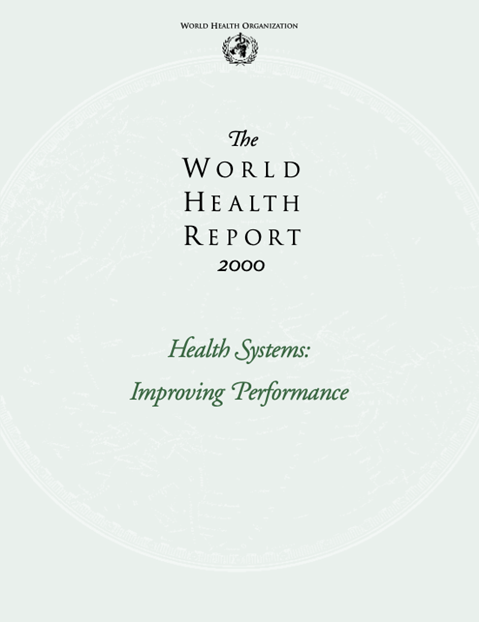
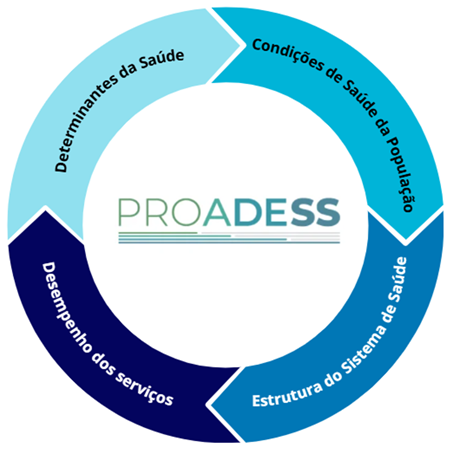

Módulo 1 | Aula 3
O Projeto de Avaliação de Desempenho do Sistema de Saúde (Proadess)
Antecedentes do Proadess

Como visto na aula anterior, o relatório (World Health Report) realizado pela Organização Mundial de Saúde no ano 2000, que avaliou o desempenho de sistemas de saúde, teve seu modelo teórico e metodológico fortemente criticados.
Como desdobramento às críticas ao relatório, inúmeras inciativas foram desenvolvidas internacionalmente, por países como Canadá e Austrália. No contexto brasileiro em 2001, uma rede multidisciplinar de pesquisadores brasileiros pesquisadores de sete instituições de pesquisa e ensino afiliadas à Associação Brasileira de Pós-Graduação em Saúde Coletiva (Abrasco) elaborou uma proposta metodológica específica para a realidade nacional, denominada Projeto de Avaliação de Desempenho do Sistema de Saúde (Proadess).
O Proadess considerou as lições de experiências internacionais de sistemas universais, como os do Reino Unido, Austrália e, principalmente, do Canadá, para avaliar o Sistema Único de Saúde (SUS).
Os pressupostos iniciais do projeto definiram que o foco central da avaliação deve recair sobre o desempenho dos serviços de saúde, reconhecendo que este depende intrinsecamente da estrutura do sistema e dos determinantes da saúde.
O contexto social, político, econômico e de conformação do sistema é abordado não como uma dimensão isolada, mas como fatores que permeiam todo o funcionamento do sistema. A matriz conceitual foi estruturada em quatro grandes dimensões interdependentes:

Um pilar estruturante do quadro conceitual do Proadess é a equidade, estabelecida como o eixo transversal que deve atravessar todas as dimensões e indicadores analisados. Esta iniciativa pressupõe que a avaliação deve servir para preencher uma lacuna de monitoramento e avaliação do SUS em seu conjunto, verificando se os princípios constitucionais de acesso universal e integralidade estão sendo efetivamente cumpridos.